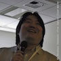
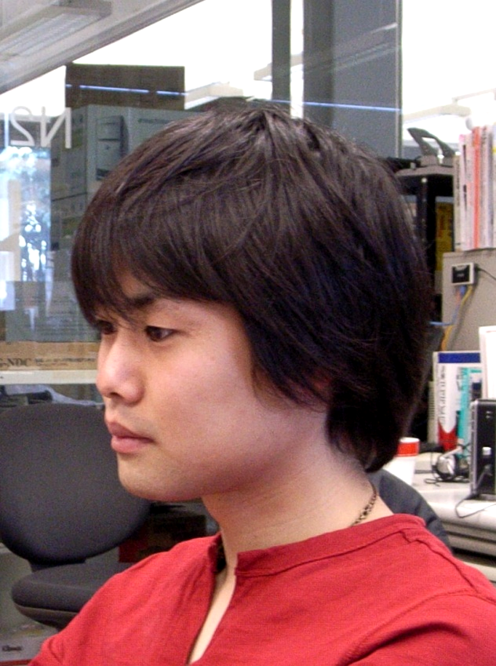
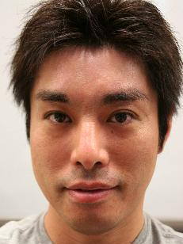
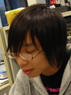
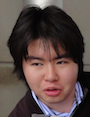
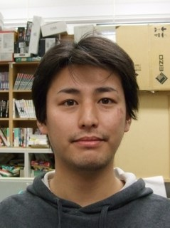
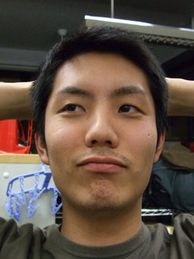
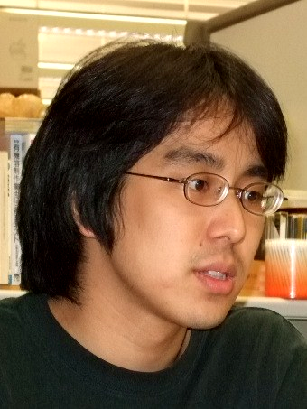
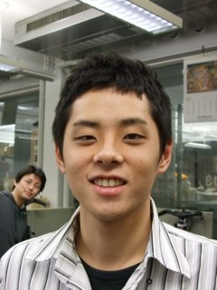

We are thinking about the future architecture of the Internet
Primary
|
rdv |
|
|
ks91 |
| ƒoƒ“ƒ~�[ƒ^�[ ƒ�ƒhƒj�[ |
�Ä“¡ Œ«�¢ |
| Rodney D. Van Meter III |
Kenji Saito |
| Faculty |
Faculty |
| |
|
|  |
yoshfuji |
|
 |
qoo |
| ‹g“¡ ‰p–¾ |
–x�ê �Ÿ�L |
| Hideaki Yoshfuji |
Katsuhiro Horiba |
| Faculty |
Doctor course |
| |
|
|  |
macchan |
|
|
sora |
| �¼’J Œ’�j |
‹óŠÕ —m•½ |
| Takesi Matsuya |
Yohei Kuga |
| Doctor course |
Doctor course |
| |
|
|
mibe |
|
 |
upa |
| �O•” �„‹` |
ՠԼ у |
| Takayoshi Mibe |
Ryo Nakamura |
| B4 |
B3 |
| |
|
|
mitsuba |
|
|
shousei |
| �¬àV ‚İ‚ä‚« |
’†‘º �®�¶ |
| Miyuki Ozawa |
Hisaki Nakamura |
| B3 |
B3 |
| |
|
|
bhangra |
|
|
yummy |
| àF“c ‘ñ–ç |
�RŠİ —S‘å |
| Takuya Shibuta |
Yudai Yamagishi |
| B3 |
B2 |
| |
|
|  |
satu |
|
|
momo |
| �²“¡ �O�’ |
Momose Kyohei |
| Hirotaka Sato |
Momose Kyohei |
| M1 |
B2 |
| |
|
OB
|  |
kaizaki |
|
|
tazaki |
| ŠC�è —Ç |
“c�è ‘n |
| Ryo Kaizaki |
Hajime Tazaki |
| Doctor course |
Doctor course |
| |
|
|  |
yaboo |
|
 |
kanai |
| ‘å–÷ —E‹P |
‹àˆä ‰l |
| Yuki Oyabu |
Akira Kanai |
| Master |
Master |
| |
|
|  |
machida |
|
|
chai |
| ’¬“c Œ[‘¾ |
‰œ‘º —S‰î |
| Keita Machida |
Yuusuke Okumura |
| Master course |
Master course |
| |
|
 |
muda |
|
|
kuro |
| ˜Z“c ‰À—S |
�•‹{ —C‰î |
| Keisuke Muda |
Yusuke Kuromiya |
| Master course |
Master course |
| |
|